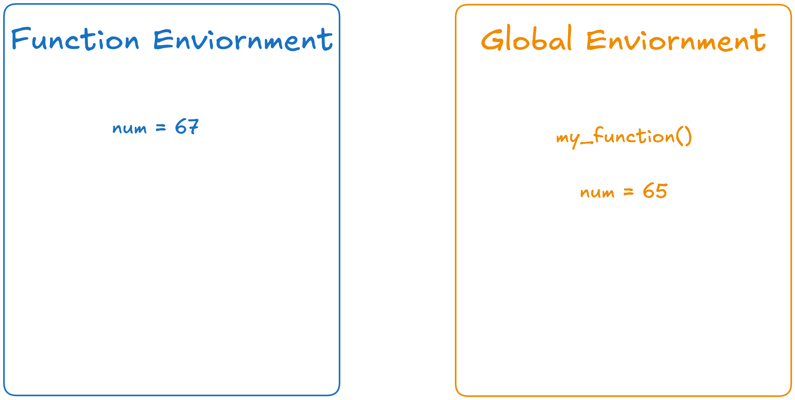

year <- c(2020,
2021,
2022,
2023,
2024,
2025)5 Writing Simple Functions in R
At this point, you’ve encountered almost 20 functions either built-in to R (e.g., sqrt()) or that live in specific packages (e.g., case_when()). For each function, we’ve learned how we can use it to get the results we were after, but we haven’t dug into what makes a function a function. That’s what this reading is about!
5.1 Motivation
It is common in statistics and data science to need to rescale a variable before including it in a model. Rescaling is quite helpful when variables are on very different scales. In fact, for some machine learning methods (e.g., K-nearest neighbors) it is critical that every variable be on the same scale for an analysis.
Take for example, some common measures of the economy. The consumer price index (CPI) measures the yearly change in price for a representative basket of goods and services1 and is recorded as a weighted average of prices (e.g., $250). Alternatively, the PPI (producer price index) measures the yearly change in prices paid to domestic producers of goods and services (e.g., $120). Finally, the PCE (Personal Consumption Expenditures) is a slightly broader measure than CPI in that it attempts to measure both how much households are spending (e.g., $14,000) and what they’re spending their money on.
cpi <- c(258.811,
270.970,
292.655,
304.702,
313.689,
321.943)ppi <- c(119.24,
119.46,
127.82,
139.98,
142.80,
146.16)pce <- c(14231.33,
16119.67,
17690.02,
18833.15,
19896.01,
20954.86)Notice how each of these variables are on different scales? Well, that’s exactly why we might want (need) to rescale them!
5.1.1 Min-Max Scaling
One common method for rescaling is called “min-max scaling.” For any numeric vector, this method finds the maximum value and the minimum value and then uses these values to rescale each value of the vector. Mathematically, each \(i^{th}\) value of a vector \(x\) is scaled based on this calculation:
\[\frac{x_i - min(x)}{max(x) - mix(x)}\] For example, if we have a vector x with values c(1, 2, 5, 7). Then the minimum of x is 1 and the maximum of x is 7. We then use these values to rescale every value of x. This would look like the following code:
Notice that the minimum value is now 0 because 1 - 1 (the minimum is 1) is 0 and the maximum value is now 1 because (7 - 1) / (7 - 1) (the maximum is 7) is 1.
We could rescale every column of economy using the same code as above:
There are a couple of issues with this process. By repeating this same process multiple times, it is harder to understand what the code is doing and we’ve made our code more error prone. Did you notice the error we made?
A better method would be to write a function that allows us to implement this process anytime we want to rescale a numeric vector!
5.1.2 Don’t Repeat Yourself
The critical motivation behind writing your own functions is the “don’t repeat yourself” (DRY) principle. In general, “you should consider writing a function whenever copied and pasted your code more than twice (i.e. you now have three copies of the same code)” (Wickham & Grolemund, 2020).
One of our favorite papers, Best Practices for Scientific Computing, summarizes this idea in a slightly different way:
Anything that is repeated in two or more places is more difficult to maintain. Every time a change or correction is made, multiple locations must be updated, which increases the chance of errors and inconsistencies. To avoid this, programmers follow the DRY (Don’t Repeat Yourself) Principle.
The DRY Principle advocates that you modularize your code—break it into smaller, independent, and reusable units. Modularizing your code helps you understand what your code is doing and makes your code more easily re-purposed for other projects.
5.2 Functions
We’ve been using functions for weeks now, but we haven’t dug deep into how they are built.
5.2.1 Syntax
The first hurdle to learning to write a function in a programming language is figuring out what syntax you should use. In R, a function is defined using function() and has the following syntax:
Let’s break this down into pieces:
![Basic syntax of a function in R. The function 'rescale' is assigned using '<-' to 'function(x)'. The function has one argument, x, which is dilineated with a red arrow and an annotation stating 'function argument (input)'. The body of the function is enclosed in curly brackets which are circled with dashed black lines. Inside the brackets, there is a single line of code '(x - min(x)) / (max(x) - min(x))' which is higlighted in orange with an annotation stating that this code represents the 'function body'.](images/03-function-syntax.png)
Function Name: When you are reading the code above, the first thing you see is the name of the function (rescale). This name is chosen by the user, so we could have equally chosen to name the function banana. However, that seems like a bad name since it doesn’t indicate what the goal of the function is. In general, we advocate to use verbs as function names where the verb describes what the function does.
Function Arguments: Inside the () after function is where the arguments (inputs) of the function are defined. All inputs you pass into a function are called arguments. Here we have one argument (x), but we will learn how to incorporate more than one argument.
Function Body: After the function(x) there is a { which starts the body of the function. The body of the function is everything contained between the opening { and the closing }.
Function Parameter: A parameter is the name of an object once is is inside the function. This might sound a bit confusing, x is both an argument (input) to the function but also a parameter inside the function. We won’t be upset if you get the two names swapped, but think you should know the language people typically use when referring to these objects.
Beginning & Ending the Function: Similar to other code styling principles we’ve learned, the guideline is for the opening { to be the last character on the line and for the closing } to be placed on its own line. These guidelines are to make your code easier to read / understand. The code below accomplishes the same task as above but is harder to read / understand what is happening:
5.2.2 Designing your own function
As you write more and more R code, you will get more used to recognizing moments where a custom function is valuable, and to designing those functions.
For now, it may be helpful to break your function writing process down into a few steps.
- Identify the need for a function. Look for moments where the same process is repeated on different information. In our example, min-max scaling is the process that was repeated on the three different variables.
- Identify the input. What object(s) were used in the process? In our example, the only object was the variable that we wanted to scale. Choose a more general name for the input object, and rewrite your code using this general name:
Choose a name for your function. Function names can use capital or lowercase letters, numbers (except as the first character), and the symbols
_and.. However, we recommend restricting yourself only to lowercase letters and the_symbol to avoid ambiguity. The name itself should be a clear descriptor of what your function does, typically in verb form. In our example, we choserescale; another reasonable choice would have beenrescale_minmax.Assign the function definition to the function name. Following the syntax rules described above, use your generic input as your argument and the corresponding code as your function body.
- Test your output. Identify what type of object your function should return. In this example, we want it to return a numeric vector that has the same length as the original vector. Make sure you always try your new function on a small example before you use it in your analysis code.
test_vector <- c(1, 2, 3, 4)
rescale(test_vector)[1] 0.0000000 0.3333333 0.6666667 1.0000000You also may want to experiment a little bit with how this function could break! Try input that:
Is only one value instead of a vector, or vice versa.
Contains missing values (
NA)Is the wrong data type, e.g. character instead of numeric.
Check-inCheck In
Now that we have created the rescale() function, let’s check our intuition for what the function should output (return) for different inputs.
- What would you expect
rescale()to output whentest_singleis input? - What would you expect
rescale()to output whentest_missingis input? - What would you expect
rescale()to output whentest_typeis input?
5.2.3 if() statements in functions
The DRY principle tells us we should avoid repeating similar code as much as possible. Another motivation for functions is to make our primary code more readable.
Consider the example from the previous chapter, where we calculated income tax rates.
if (income < 11925) {
0.10
} else if (income <= 48475) {
0.12
} else if (income <= 103350) {
0.22
} else if (income <= 197300) {
0.24
} else if (income <= 250525) {
0.32
} else if (income < 626350){
0.35
} else {
0.37
}This is a lot of lines of code, with a lot of very specific numeric values in them. We can make this cleaner by defining a function that runs the whole process when called.
We already have identified our input to the function: the object income, which should be a single numeric value.
All we need to do now is pick a reasonable name, then wrap the code in proper function definition syntax.
tax_rate <- function(income) {
if (income < 11925) {
0.10
} else if (income <= 48475) {
0.12
} else if (income <= 103350) {
0.22
} else if (income <= 197300) {
0.24
} else if (income <= 250525) {
0.32
} else if (income < 626350){
0.35
} else {
0.37
}
}Now, we try out our function for a few incomes:
tax_rate(611203)[1] 0.35tax_rate(795000)[1] 0.37tax_rate(45000)[1] 0.125.2.4 Vectorized functions
Thus far, we have seen two types of functions:
rescale()applied a process to a vector of values.tax_rate()applied a process to a single value.
Recall that a vectorized operation is one that, when given a vector, applies the operation to each element of the vector and returns the results.
Neither rescale nor tax_rate is a vectorized function!
rescale does take a vector as input, but it applies a process to the whole vector at once, not to one element at a time. That is, we could not replace
rescale(c(1,2,3))with
rescale(1)
rescale(2)
rescale(3)As for tax_rate we have already seen that we get the error message "the condition has length > 1" when a vector is entered into an if() statement. In function form, this same error is still triggered.
incomes <- c(611203, 795000, 45000)
tax_rate(incomes)Error in `if (income < 11925) ...`:
! the condition has length > 1As before, the only way to make a non-vectorized function that takes a single input become vectorized is to take advantage of existing vectorized operations in R:
tax_rate_vectorized <- function(income) {
case_when(income < 11925 ~ 0.10,
income <= 48475 ~ 0.12,
income <= 103350 ~ 0.22,
income <= 197300 ~ 0.24,
income <= 250525 ~ 0.32,
income < 626350 ~ 0.35,
.default = 0.37
)
}
incomes <- c(611203, 795000, 45000)
tax_rate_vectorized(incomes)Error in `case_when()`:
! could not find function "case_when"5.2.4.1 Loops and functions
What to do if we truly cannot vectorize our function, but we need to run it on a long vector of values? We can make use of loops to call the function many times.
For example, suppose we wanted to calculate the income tax rate for a long list of employee salaries. We can use a for loop to repeat our non-vectorized tax_rate function many times.
[1] 0.12
[1] 0.32
[1] 0.35
[1] 0.22
[1] 0.22
[1] 0.24
[1] 0.24Here we have only printed out the seven tax rates, not stored them in a vector object. This is a major disadvantage of unvectorized functions. Although there are certainly ways to solve this problem, they are more complicated than we wish to tackle at this stage. For now, we will stick with vectorized functions.
5.3 Environment, Scope, Name Masking & Dynamic Lookup
Now that we know how functions behave it’s time to learn some of the hidden details. Let’s start with the concept of a function’s environment.
5.3.1 Environment
A function has its own environment, a universe that gets opened when you run the function. A function’s environment is separate from the global environment, which is where all the objects you’ve created live (i.e., all the objects that would appear in the Environment tab). We need to first understand how these environments differ before we learn how they can relate to each other.
Let’s explore this with a simple function:
my_function <- function(){
num <- 67
return(num)
}Hopefully you’ve noticed something strange about this function—it has no arguments. We’ve written the function this way so we can explore the difference between a function environment and the global environment.
What would you expect this code to return?
my_function()If you guessed 67 you are correct! When we call my_function() it first creates an object called num that has the value 67 attached to it, and then returns the value of num (67).
You might think that since my_function() creates an object num that you could use this object outside the function…
numError:
! object 'num' not foundbut this object doesn’t exist in the global environment, it only exists in the function environment.

5.3.2 Name Masking
But what if there was an object in the global environment that had the same name as the object in the function environment?
num = 65
What do you expect this code will return?
my_function()If you guessed 67 you are correct! This is an example of what is called name masking, where names (objects) defined inside of a function mask names (objects) defined outside of a function. In this example, num has the value of 65 outside the function, but inside the function num has a value of 67. Functions operate as a closed system where they rely only on the objects within the function environment, which is why my_function() returns 67 and not 65.
5.3.3 Dynamic Lookup
We just said “functions operate as a closed system,” but that is not always true. Functions try to operate as a closed system, but sometimes they need to ask for a little help. If we make a small modification to my_function(), you will see what we mean!
my_function <- function(){
return(num)
}Notice, we’ve eliminated the line of the function where num was created (num <- 67). However, the function still returns the value of num. So, here’s our new system:

Now what do you expect this code will return?
my_function()If you guessed 65 you are correct! When an object doesn’t exist in the function’s environment then it searches for that object in the global environment. If it can’t find an object in the global environment, the function will error out.
It is also important to note that because my_function() is relying on objects in the global environment, it is possible that the output can change. If we change the value of num in the global environment, then the output of my_function() will also change:
num <- 13
my_function()[1] 135.3.4 So what does this all mean?
This is a lot of technical details, so you might be wondering what the big picture is. Here are the three things you should know:
Objects created in a function cannot be accessed in the global environment
If an function can’t find an object it is supposed to use within its environment (the function environment), then it will search for that object in the global environment.
In general, we would recommend not using the same name for an object in a function and an object in your global environment. For example, you shouldn’t name your dataset data and then use a parameter data in your function.
Check-inCheck In
Suppose we’ve created the following function:
friend_or_foe <- function(){
if_else(pet == "cat",
"friend",
"foe")
}And we have the following value in our global environment:
pet <- "cat"What would
friend_or_foe()output?What if we ran the following code
pet <- "parrot"? What wouldfriend_or_foe()output?What if there was no object named
petin the global environment? What wouldfriend_or_foe()output?
The Bureau of Labor Statistics (BLS) has a database of over 80,000 prices which they sample monthly for more than 200 categories of products and services to determine the CPI and inflation rate. The BLS uses a huge basket because its goal is to get an accurate measure of price changes for consumer goods and services across the U.S. economy.↩︎